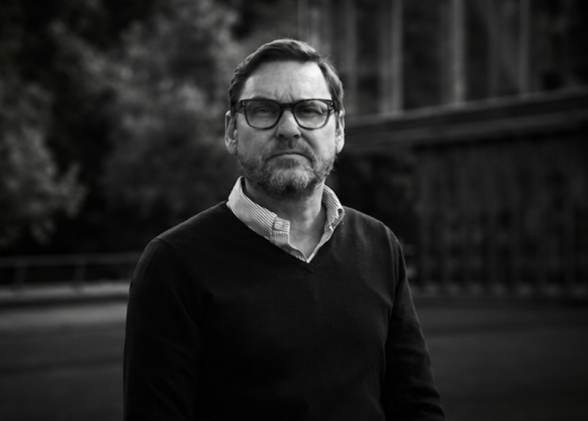

Kata — Imagery · Option 05 brackets
Five ways the bracket frame can move. Loops run automatically for comparison; the FOCUS option is hover-only — mouse over it. All are quiet, measured, and tied to the system's registration-mark language.
A — Draw-in On load

The four corners draw in from nothing, staggered like registration marks being struck. The photo stays still.
B — Settle On load
The picture eases up from a slightly dark, over-scaled state into focus while the brackets fade in. The image moves, not the frame.
C — Focus Hover
Rest is genuinely out of focus — soft, low-contrast, reticle held open. On hover the lens pulls sharp and the corners converge and lock. A focus, not a zoom.
D — Scan On load
A single clay measure-line sweeps across; the brackets set behind it. Reads as the image being read, or scanned.
E — Develop On load
On loadThe print comes up out of the ink — dark to full duotone — then the brackets draw. Most photographic; nods to the film direction.
C.1 — Zoom Hover
Sharp at rest; on hover the picture pushes into the frame and the reticle opens outward. Attention through scale, not lens.